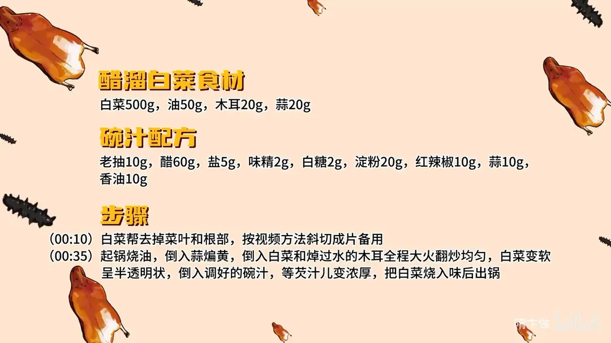

醋溜白菜
隋卞一做。白菜帮斜切片，全程大火，碗汁一次倒入收浓。
原视频：https://www.bilibili.com/video/BV1dCmUYREH2
食材
白菜、油、木耳 等 4 样
| 类别 | 用料 | 用量 |
|---|---|---|
| 主料 | 白菜 | 500g |
| 主料 | 油 | 50g |
| 主料 | 木耳 | 20g |
| 主料 | 蒜 | 20g |
碗汁配方
| 用料 | 用量 |
|---|---|
| 老抽 | 10g |
| 醋 | 60g |
| 盐 | 5g |
| 味精 | 2g |
| 白糖 | 2g |
| 淀粉 | 20g |
| 红辣椒 | 10g |
| 蒜 | 10g |
| 香油 | 10g |
步骤
- 改刀：白菜帮去掉菜叶和根部，斜切成片备用。
- 炒制：起锅烧油，倒入蒜煸黄，倒入白菜和焯过水的木耳，全程大火翻炒均匀；白菜变软呈半透明状，倒入调好的碗汁，等芡汁儿变浓厚、白菜烧入味后出锅。
小贴士
- 碗汁提前兑好，一次倒入，避免一样一样加导致白菜出水变软。
- 全程大火，白菜才脆而不塌。
讲解要点
难度：★★☆☆☆（难点是锅气和碗汁的浓稠，火一小就成炖白菜）
为什么这么做
- 只用白菜帮：菜帮水分足、纤维直，片薄了炒出来才脆；菜叶一炒就塌、出水。
- 抹刀片（斜刀片）：斜着片能把粗纤维切断、又增大受热面，薄而不断，熟得快还保脆。
- 根部切掉一刀：根上那截老柴，嚼不动。
- 蒜煸黄再下白菜：蒜黄的时候香气最足，早了不香、过了发苦。
- 油要放够、锅要够热：油是传热的媒介，油少了白菜等于在锅里焖，出水变成炖白菜，芡也挂不住。
- 全程大火、绝不焯水：焯水会让白菜细胞破裂、水全出来，脆感就没了；大火快炒是表面断生、里面还脆。
- 白菜半透明再倒碗汁：这时白菜已经断生、水也出了一部分，碗汁下去正好收浓裹住。
- 碗汁一次倒入、稍泡一下：淀粉一次糊化，芡才亮；泡一会儿让汁往菜里走，更入味。
容易翻车
- 白菜焯水，或者锅不热、菜下太多，最后成一锅炖白菜，芡挂不住。
- 油放少了，白菜发干、出水。
- 碗汁分几次加，淀粉糊化不匀、结块。
- 蒜煸过头发苦，整盘带焦味。
热评补充
- 重点是火候：锅要烧到冒大烟再下白菜，一次下的量也别多；火小、锅凉、菜多，必然出水，勾芡也勾不住。
- 有观众按配方做觉得偏酸，建议把 60g 醋分一部分沿锅边直接烹进去，剩下的兑碗汁，碗汁里适当加点水再下锅，芡不容易结块。
原片尾卡

原片文案
AI 字幕校准稿
他们说这是白菜最好吃的做法，你一定喜欢的醋溜白菜。
白菜呢，咱们只选用白菜帮，白菜心儿这两天再给你们发一个凉拌菜。心边上那个叶儿太多了，要给它去一下；根的地方得切一刀，这个地方有柴，就不嚼了。中间切一下，轻轻一拍，这叫抹刀片，完事了。
锅里边搁上底油，把这个蒜放锅里煸一下，把蒜煸黄，然后把白菜放进去。焯过水的木耳也放进去。要怎么保持白菜的爽脆呢？一定要用油煸，千万不能焯水。炒白菜的时候，这个油不能抠搜，适当多放一点。
看白菜变软、半透明状态了，这就可以了。然后咱把碗汁倒进去，不用太着急出锅，等芡汁浓了之后，让这汁把白菜稍微泡一下，它就更入味一点。哎，这样就行了，出锅。
这白菜又软趴，它又脆，粉也比较入味，而且它所有的汁和芡都糊在白菜上面，紧紧地把白菜全部都给裹住了。是那种很厚的醋味，已经进入到白菜的里面了，同时这个白菜还含有很爽脆的口感。所以说白菜一定不能焯水，千万不能焯水。
咱饭店的这道菜基本上都是啪一拉油，过完油之后把那汁儿往里一裹，上桌以后看着油亮油亮的很漂亮，但是你吃了，绝对没有这个好吃。
整理自「隋卞一做」系列视频，仅供个人学习。